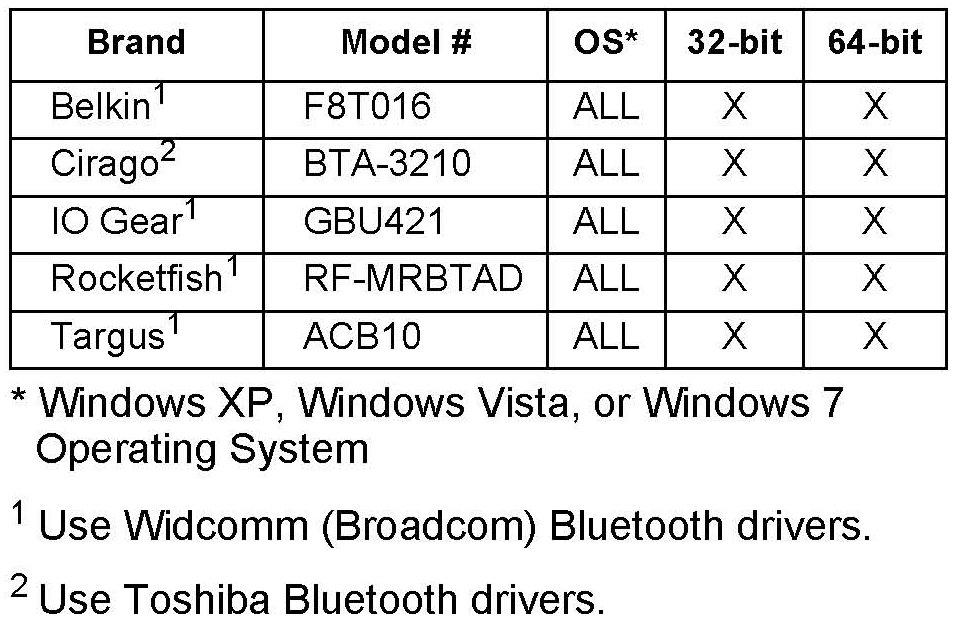

Cell Phone - Programmable HFL (HFT) Unit Update Info.: Overview
12-070April 3, 2013
Applies To:
Honda Vehicles with Programmable HFL (HFT) Control Units
Updating Programmable HFL (HFT) Control Units
(Supersedes 12-070, dated March 21, 2013, to revise the information marked by the black bars or asterisks)
REVISION SUMMARY
*Under the subheading HFL CONTROL UNIT UPDATE PROCEDURE-CR-V, new images and text were added.*
The procedures in this service bulletin are used and referenced in other service bulletins.
This bulletin describes the procedure to update the software in programmable HandsFreeLink (HFL) control units.
This bulletin consists of two procedures:
^ Vehicles without Navigation.
^ Vehicles with Navigation.
This service bulletin also describes these subjects:
^ Required tools and equipment
^ Updating tips and precautions
^ Who to contact for questions or problems when using Honda-supplied updating equipment, including software and tools.
NOTE:
Whenever you install a new HFL control unit, check that it has the latest software, and update it if needed.
WARRANTY CLAIM INFORMATION
Refer to the specific service bulletin for the symptom you are repairing.
QUESTIONS ABOUT THE UPDATING EQUIPMENT OR THE INTERACTIVE NETWORK
For questions about the software application, refer to the job aid titled Honda HFL (HFT) Control Unit Update -- User's Guide, available on ISIS.
For cellular phone compatibility listings or required settings, call JCI Technical Support.
For HFL PC software installation or Bluetooth pairing issues, call the iN Support Center.
For HFL module reprogramming (vehicle side) and general troubleshooting, call Tech Line.

REQUIRED TOOLS AND EQUIPMENT
^ A laptop PC, loaded with the newest version of the HDS software, and equipped with the minimum requirements:
- Any version of Windows listed below:
^ Windows XP (32-bit), at least 512 MB RAM, and Service Pack 2
^ Windows Vista/7 (32-bit), at least 1 GB RAM
^ Windows 7, (64-bit), at least 2 GB RAM
- 1 gigahertz (GHZ) or faster 32-bit (x86) or 64-bit (x64) processor
- At least 16GB of available hard disk space (32-bit) or at least 20 GB hard disk space (64-bit; Windows 7 only)
- windows Vista Only: Support for DirectX 9 graphics with WDDM and at least 128 MB of graphics memory (32 MB for Home Basic)
- windows 7 Only: DirectX 9 Graphics device with WDDM 1.0 or higher driver
- The Microsoft.NET Framework software application: Version 2.0 or later
NOTE:
This is available to download for free; go to microsoft.com or ask your system administrator for assistance.
^ The latest version of the HDS software installed on this computer. See the specific service bulletin you're applying for additional information.
^ A recognized Bluetooth radio device installed on this computer. It one is required, order P/N: CDWF8T016 from the Tool and Equipment Program (on iN, click on: Service > Quick Links > Tool and Equipment Program), or choose a commercially available device from the list below.
Disclaimer